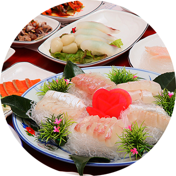
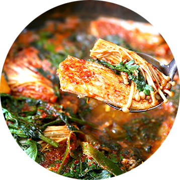

관광지
-
거문도백도
남해안 최초로 불을 밝힌 거문도, 남해의 해금강이라 불리는 백도 거문도 백도 지구는 100년 넘는 역사와 함께 남해안 최초로 불을 밝힌 거문도 등대와 녹산등대가는 길, 거문도 동백 숲과 더불어 남해의 해금강이라 불리우는 백도의 기암괴석과 천혜의 비경을 자랑한다.
-
여수해상 케이블카
여수 돌산과 자산공원을 잇는 1.5Km 구간의 국내 첫 해상케이블카로 바닥이 투명한 크리스탈 캐빈 15대(5인승)와 일반 캐빈 35대(8인승), 총 50대가 운행되고 있다. 바다 위를 지나 섬과 육지를 연결하는 국내 최초의 해상케이블카
-
여수 밤바다
인기그룹 버스커버스커가 노래로 부를 만큼 바다를 끼고 도는 해안선 여수도심야경은 낭만과 황홀함을 더해준다. 여수의 도시 곳곳에는 화려한 조명이 여수의 밤바다를 수놓고 있어 지금도 많은 관광객들이 찾고 있다.
먹거리
-
서대회
1년이상 발효시킨 막걸리 식초를 사용한 깊은맛 막걸리로 발효시킨 식초와 초고추장, 그리고 온갖 채소와의 조화 부드러우면서도 새콤달콤한 서대회무침 따끈한 밥에 버무려 먹으면 서대회의 진미를 느낄 수 있다.
-
갯장어구이 / 샤브샤브
한여름의 인기 보양식 여름철 인기 만점 보양식인 갯장어 요리, 입에서 살살 녹는 부드러운 갯장어회와 끓는 물에 살짝 데쳐먹는 갯장어 샤브샤브는 여름철 필수 음식 아이템으로 풍부한 맛과 영양을 자랑한다.
-

여수 한정식
싱싱한 해산물을 주재료로 만든 다양한 음식들 청정지역 남해안의 싱싱한 해산물을 주원료로 하여 40여 개의 다양한 음식들! 맛의 아름다움에 놀라고 싱싱함에 놀라고 다양한 해산물에 놀란다.
-

갈치조림
맛과 영양이 뛰어난 별미 중의 별미 거문도 연근해에서 생산되는 일명 여수‘먹갈치’는 맛과 영양이 뛰어나고 가을갈치가 제격인 갈치조림이나 구이는 소화촉진, 식욕증진, 성인병 예방에 도움을 줄뿐더러 필수아미노산이 고루 함유돼 성장기 어린이 발육에 탁월한 식품이다.
-

새조개 샤브샤브
새의 부리모양을 닮은 새조개 많은 영양분을 함유하고 있어 ‘조개의 황제’로 불리는 새조개는 속살이 새의 부리모양과 닮았다하여 붙여진 이름이며 샤브샤브는 버섯, 파, 고추, 마늘 등으로 우러낸 야채국물에 살짝 데쳐 소스와 함께 즐기면 감칠맛과 바다향이 몸속으로 깊게 파고드는 느낌을 받는다.